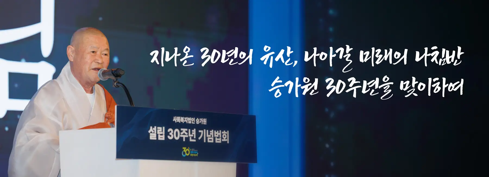
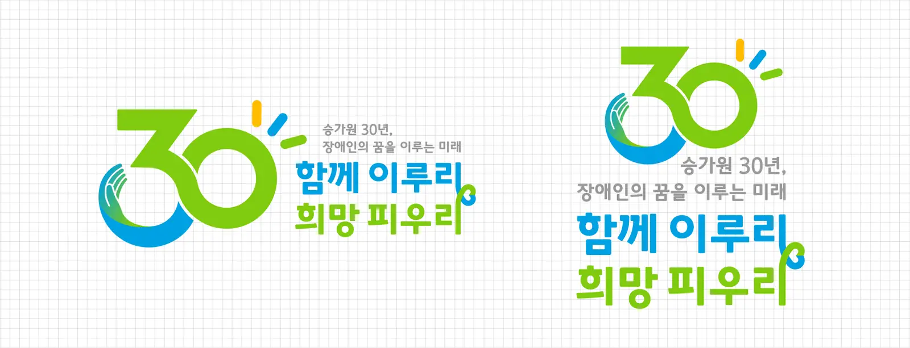

MESSAGE
이사장스님 기념사
지난 30년의 발자취를 돌아보며 이사장스님이 전하는 축하와 감사의 말씀입니다.

자비무적(慈悲無敵),
미움이나 대립 대신 사랑과 연민으로 세상을 대하면 적이 사라진다는 의미입니다. 이러한 마음으로 세상을 향해 자비복지를 실천해 온 사회복지법인 승가원이 어느덧 설립 30주년을 맞이하였습니다. 지난 시간을 돌아보면 감개가 무량하기만 합니다.
1996년 대한불교종계종 중앙승가대학교가 소쩍새마을을 인수하며 설립된 승가원은 그간 부처님의 자비사상과 중생구제의 원력을 사회복지사업을 통하여 실천해 왔습니다. 승가원자비복지타운과 승가원행복마을 개관 이후로는 장애가족들의 개별적인 욕구를 반영해 서비스를 제공하며 가치 있고 행복한 자비복지 공동체를 구현하였습니다. 또한 사회복지 노하우를 널리 확산시키며 지역사회 복지 사각지대 해소의 중심으로 기능하였습니다. 현재 승가원은 2개소의 법인 직영 장애인거주시설을 중심으로 장애인종합복지관 3곳, 지역종합사회복지관 2곳 등 15개의 복지기관을 운영하고 있습니다. 그 과정에서 장애가족 복지 향상, 장애 인식 개선, 자립 지원 기술교육, 어린이집 운영 등 사회 전반에 걸쳐 사업 지평을 넓혀 왔습니다. 오늘이 있기까지 정성을 모아 주신 후원가족 한 분 한 분과 헌신해 온 모든 근무가족 여러분에게 깊은 감사의 마음을 전합니다. 승가원 설립 30주년을 맞이하여 미래를 향하여 새로운 전기를 열어야 할 때입니다. 급변하는 시대 변화에 대응하며 불교의 자비·평등 가치를 실현하고 사회복지 패러다임 전환을 선도해야 할 책무가 우리들 앞에 놓여 있습니다. 이러한 시점에 과거를 돌아보고 이를 바탕으로 내일을 위한 지침으로 삼을 수 있는 승가원 역사서를 펴내게 되어 매우 뜻깊게 생각합니다. 우리는 승가원 디지털역사관을 통하여 온고지신(溫故知新)의 교훈을 얻고 법인 설립 당시의 초심을 돌아보며, 그 기록을 새로운 미래 경로의 나침반으로 삼을 수 있을 것입니다. 소중한 어제가 모여 오늘이 되었고, 이제 우리가 만들어 가는 오늘이 곧 승가원의 내일이 될 것입니다. 작은 것 하나하나에 세상 모든 의미가 담겨 있다는 경전의 가르침을 마음에 새기고 우리가 일하는 현장에 적용해 나가야 합니다. 그럴 때 승가원은 지나온 성과에 안주하지 않고, 다시 앞으로 나아갈 수 있습니다. 정토사회를 염원하는 우리 모두의 기원이 성취되기를 기도드리며, 모든 분들의 행복을 기원합니다.
감사합니다.
FILM
설립 30주년 기념 영상
승가원이 걸어온 지난 시간의 기록과 앞으로도 이어갈 따뜻한 약속을 담은 기념영상입니다.
EMBLEM & SLOGAN
엠블럼과 슬로건
사회복지법인 승가원 설립 30주년을 기념해 제작한 엠블럼 및 슬로건입니다.

승가원 설립 30주년 기념 엠블럼 & 슬로건
장애가족의 행복을 지켜온 지난 30년의 발자취와 앞으로 장애가족의 꿈과 희망을 함께 피워가고자 하는 승가원의 다짐을 담았습니다. 또한 '장애가족 행복지킴이'라는 승가원의 정체성과 역할을 슬로건 안에 표현함으로써 승가원이 앞으로도 변함없이 장애가족 곁에서 함께하며 희망의 미래를 만들어가겠다는 의지를 분명히 하고 있습니다.
숫자 '30' 안에 표현된 감싸 안는 손의 형상은 후원가족의 따뜻한 마음과 포용, 그리고 장애가족과 함께 행복한 삶을 만들어가고자 하는 자비복지의 가치를 상징합니다. 또한 숫자 '30'을 하나로 이어 표현함으로써 나눔과 행복이 계속해서 순환되는 긍정적인 에너지를 시각적으로 담아냈습니다.
CELEBRATION
30주년 기념법회
함께 축하하고 온기를 나눈 순간들입니다. 사진을 누르면 크게 볼 수 있어요. (원본 75장 중 24장)